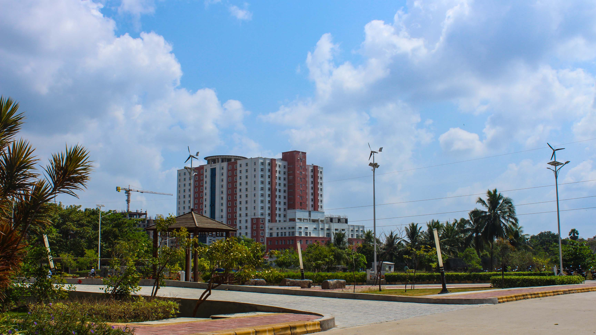
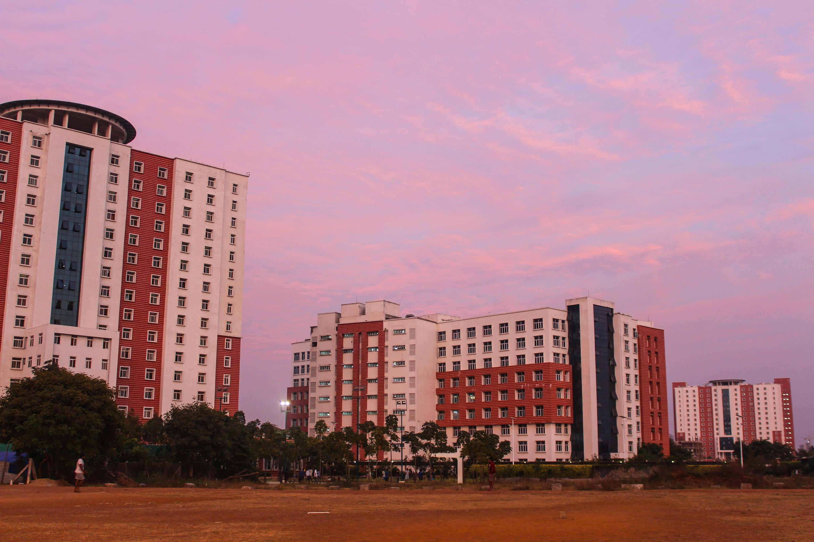
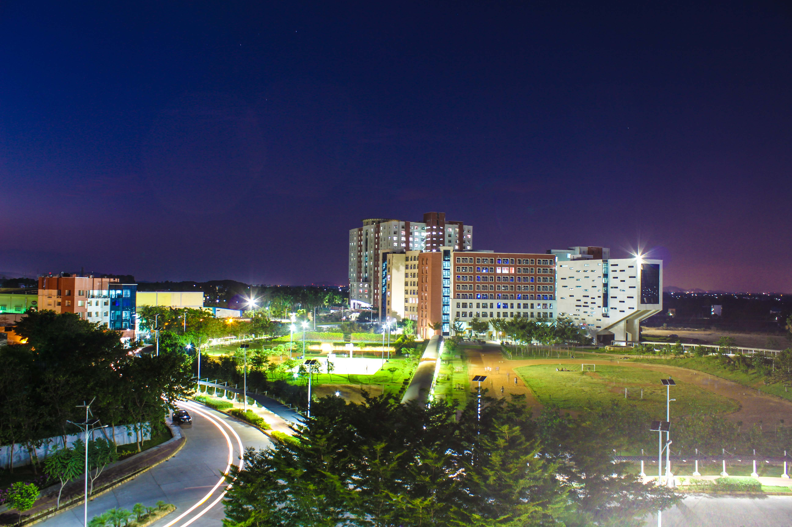
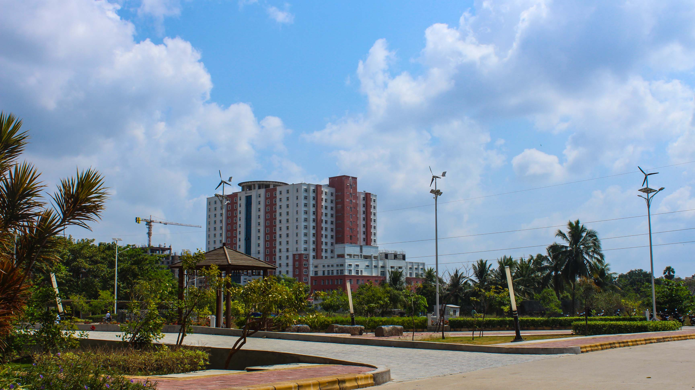
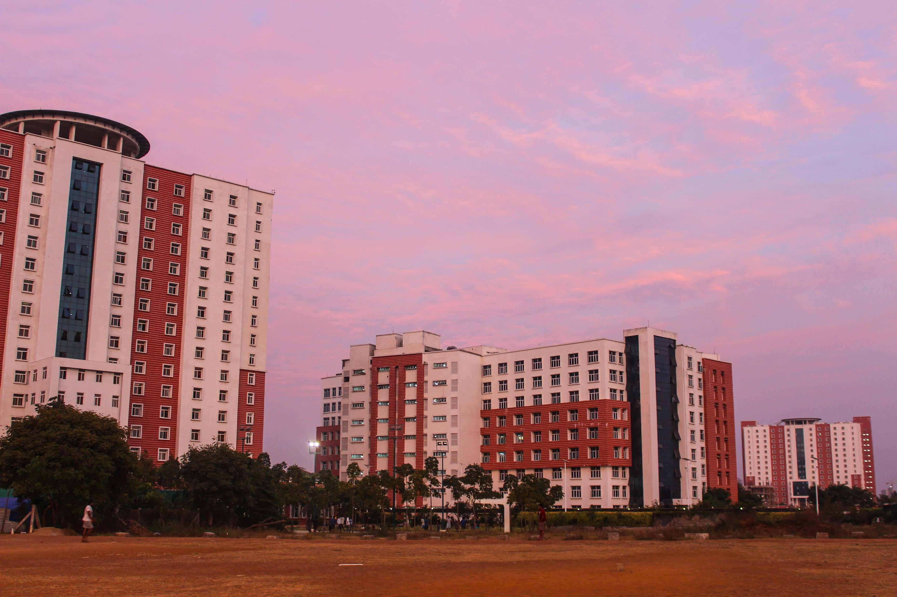
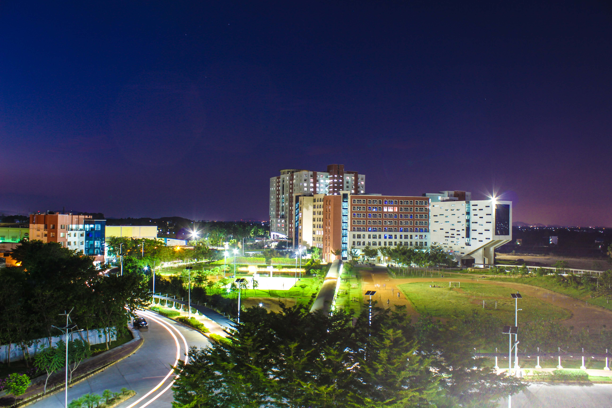

VIT-BIS FEST 2025
11th March, 2025
A National Fest organized by
School of Electronics Engineering,
Vellore Institute of
Technology, Chennai
In association with
Bureau of Indian Standards

VELLORE INSTITUTE OF TECHNOLOGY, CHENNAI
Transforming life through excellence in education and research.


 





ABOUT VIT
Vellore Institute of Technology (VIT) was founded in 1984 as Vellore Engineering College, a self-financing institution dedicated to providing quality higher education. In 2001, the Union Ministry of Human Resource Development conferred university status on the institution under Section 3 of the University Grants Commission (UGC) Act, 1956. VIT is led by its visionary founder and Chancellor, Dr. G. Viswanathan, a former Parliamentarian and Minister in the Government of Tamil Nadu. In recognition of his exceptional contributions to education, Dr. G. Viswanathan was awarded an honorary doctorate by West Virginia University (USA) in 2009 and the State University of New York (USA) in 2024. With a commitment to delivering world-class education on par with international standards, VIT continually adopts innovative approaches to teaching and research. Our Memoranda of Understanding with various international universities, being a major strength, enable meaningful collaborations via student and faculty exchanges and foster joint research projects. Many of our students, working in international organizations and universities, deliver high-quality solutions and conduct research that bring esteem to India and make us proud of our legacy. At VIT, the pursuit of excellence in education and research is complemented by a dynamic ecosystem of innovation, research and global engagement. As we advance steadily, we remain steadfast in our mission to nurture leaders and innovators who can make a meaningful impact on the world.
ABOUT VIT CHENNAI
VIT Chennai was established in 2010 and has since become a beacon of excellence in higher education. Spearheaded by Vice President Dr. G. V. Selvam, a pioneering visionary who laid the foundation of VIT Chennai, he is an insightful architect of its evergreen campus and an ingenious leader whose comprehensive vision and mission have shaped its growth. Under his guidance, VIT Chennai has rapidly evolved into a hub of innovation and academic distinction. The leadership team, including Vice Chancellor Dr. V. S. Kanchana Bhaaskaran, Pro Vice Chancellor Dr. T. Thyagarajan and Additional Registrar Dr. P. K. Manoharan, drives its mission of delivering transformative education and impactful research. Strategically located in the capital city of Tamil Nadu, VIT Chennai is a globally engaged, competitive, and research-enriched institution. It proactively addresses industrial, social, economic, and environmental challenges, fostering application-based learning that produces industry-ready professionals. Known for its cosmopolitan atmosphere, VIT Chennai attracts students from across the globe, fostering a vibrant and multicultural community. Committed to maximizing industrial connectivity and establishing Centers of Excellence in cutting-edge research areas, VIT Chennai enriches technological and managerial human capital through a collaborative and inclusive academic environment. It serves as a platform for intellectual exchange, encouraging the convergence of diverse ideas to drive innovation and learning. Dedicated to societal and industrial advancement, VIT Chennai leverages its resources to benefit the community, supports national knowledge-building initiatives, and fosters international collaborations for mutual progress in research and education. With a clear vision and an unwavering mission, VIT Chennai continues to redefine the landscape of higher education in India and beyond.
SCHOOLS AT VIT CHENNAI
School of Advance Sciences (SAS)
The school offers the following programs: M.Sc. Data Science, M.Sc. Physics, M.Sc. Chemistry, Ph.D., and facilitates B.Tech. programs from all the schools, as well as 5-year Integrated M.Tech. programs by offering various core and elective courses in Chemistry, Physics, and Mathematics/Statistics.
School of Electrical Engineering (SELECT)
The School offers undergraduate programs with B.Tech. in Electrical and Electronics Engineering and Electrical and Computer Science Engineering, as well as postgraduate programs with M.Tech. in Electric Mobility and Ph.D. in Electrical and Electronics streams with various specializations.
School of Electronics Engineering (SENSE)
The School offers three B.Tech. programmes, namely, Electronics and Communication Engineering, Electronics and Computer Engineering, and Electronics Engineering (VLSI Design and Technology). It also offers two M.Tech. programmes, one in Embedded Systems and the other in VLSI Design. In addition, Ph.D. research programme is offered in the areas of Electronics, Communication and Computer Engineering and their allied fields.
School of Mechanical Engineering (SMEC)
The school offers three undergraduate programs with B.Tech. in Mechanical Engineering, Mechatronics and Automation, Mechanical Engineering with specialization in Electric Vehicles. The school offers two postgraduate programs with M.Tech. in CAD/CAM, Mechatronics. Ph.D. programs in Mechanical stream with various specializations are also offered by the school.
School of Civil Engineering (SCE)
The school offers B.Tech. in Civil Engineering, M.Tech. in Structural Engineering, and Ph.D. in Civil Engineering with various specializations. Programs offered at the school cover the needs of a wide range of industries, including buildings, bridges, highways, railways, airports; urban infrastructure; architecture; environment; water resources; hydraulic structures; geology; GIS; and remote sensing.
School of Computer Science and Engineering (SCOPE)
The School offers Undergraduate Programmes with B.Tech in Computer Science and Engineering, CSE (Artificial Intelligence and Machine Learning), CSE (Cyber Physical Systems), CSE (Artificial Intelligence and Robotics), CSE (Data Science), CSE (Cyber Security), and B.Sc. in Computer Science. The school also offers two year Postgraduate Programmes (DST FIST Supported) with M.Tech Computer Science and Engineering, CSE (Big Data Analytics), Software Engineering, CSE (Business Analytics), CSE (Artificial Intelligence and Machine Learning), M.Tech. by Research, Master of Computer Applications (2 years), and and Ph.D. research programs.
VIT Business School (VITBS)
The School offers BBA (Bachelor of Business Administration), B.Com (Hons) with specialization in Banking and Finance, Audit and Assurance, Financial Markets and Analytics, and BBA (Hons) with specialization in General Management, Digital Marketing & Communications Strategy, and Business Analytics & AI, as well as a Master of Business Administration and full-time Ph.D. in Management.
VIT Law School (VITSOL)
The school offers a bachelor's degree in B.A.LLB (Hons). It also offers two undergraduate honors programs: B.A., LL.B (Hons) and B.B.A., LL.B (Hons). Additionally, it offers LL.M in three branches of law – International Law and Development, Corporate Laws, and Intellectual Property Laws. Furthermore, the school offers a doctoral program.
VIT Fashion Institute of Technology (VFIT)
The school offers two undergraduate programs: B.Tech. in Fashion Technology (4 years) and B.Sc. in Fashion Design (3 years).
School of Social Sciences and Languages (SSL)
The school encompasses three major divisions: the Division of English, the Division of Foreign Languages, and the Division of Social Sciences. A brilliant team of faculty members specialized in English, French, German, Spanish, Japanese, Political Science, Psychology, Sociology, and Social Work form the SSL crew. The school offers a range of university core and elective courses to all students registered under various programs offered by the Institute: B.Tech., M.Tech., MCA, MBA, M.Sc., B.A., LL.B (Hons), B.B.A., LL.B (Hons), and B.Sc.